Enzyme sinh học
Nhiều dòng Green Wash được định hướng sử dụng nền tảng enzyme sinh học để hỗ trợ xử lý các vết bẩn phổ biến.
GreenCrest phát triển tấm giặt nén theo hướng nhỏ gọn, dễ sử dụng, dễ bảo quản và phù hợp với nhu cầu của người tiêu dùng Việt Nam.
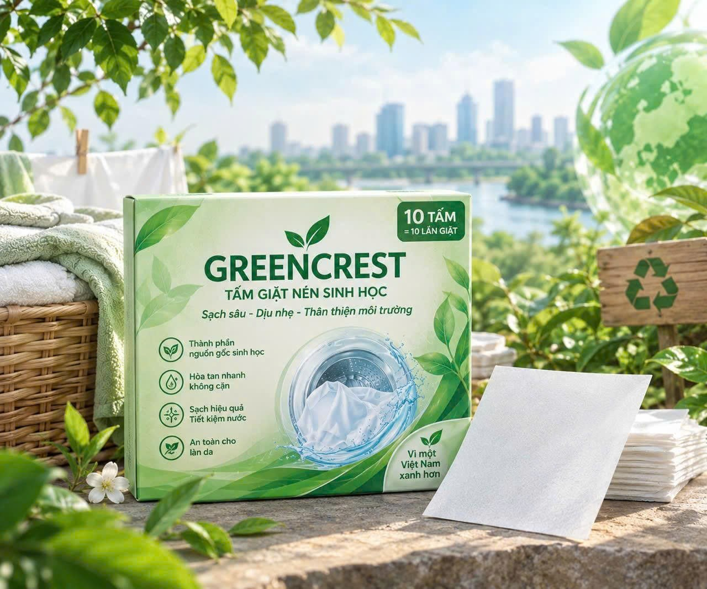
Green Crest bắt đầu từ ý tưởng biến công việc giặt giũ hàng ngày trở nên tiện lợi và hiện đại hơn. Từ đó, thương hiệu phát triển tấm giặt nén — sản phẩm nhỏ gọn, dễ sử dụng, dễ bảo quản và phù hợp với nhu cầu người Việt.
GreenCrest đồng thời chú trọng tối ưu bao bì, hạn chế lãng phí và khuyến khích lối sống xanh, với niềm tin rằng những thay đổi nhỏ trong thói quen hàng ngày có thể tạo nên giá trị lớn cho cộng đồng và môi trường.
“Đơn giản hóa việc giặt giũ, mang đến giải pháp tiện lợi và góp phần xây dựng lối sống xanh cho người Việt.”
Giữ tinh thần bố cục xanh – sạch – hiện đại của bản HTML ban đầu, đồng thời đồng bộ nội dung theo tài liệu GreenCrest.
Nhiều dòng Green Wash được định hướng sử dụng nền tảng enzyme sinh học để hỗ trợ xử lý các vết bẩn phổ biến.
Dễ kiểm soát lượng sử dụng, gọn nhẹ hơn so với sản phẩm dạng chai và thuận tiện khi bảo quản.
Các dòng Travel, Camping, Mini Pack và combo du lịch được thiết kế để dễ mang theo trong chuyến đi.
GreenCrest chú trọng tối ưu bao bì, hạn chế lãng phí và khuyến khích những lựa chọn tiêu dùng có trách nhiệm hơn.
Tìm theo tên, mã sản phẩm hoặc lọc theo nhóm trong tài liệu.
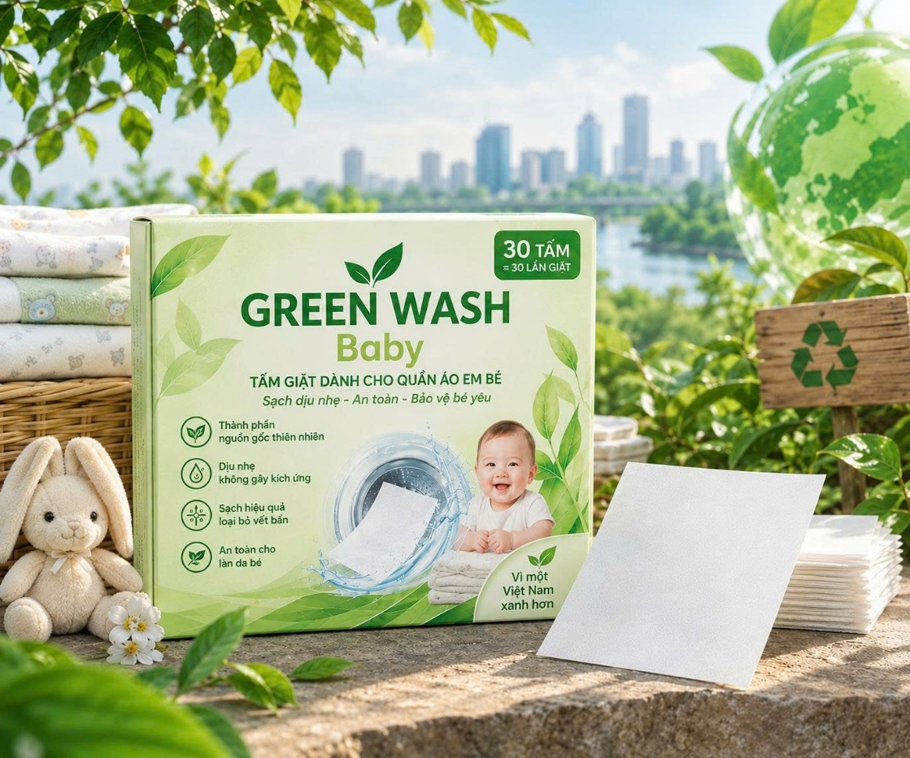
Green Wash Baby là dòng tấm giặt được phát triển dành cho các gia đình có trẻ nhỏ. Sản phẩm sử dụng thiết kế dạng tấm cô đặc, giúp phụ huynh dễ dàng kiểm soát lượng …
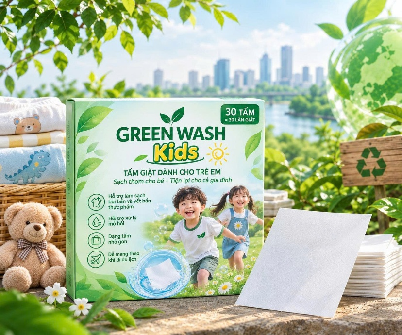
Green Wash Kids hướng đến trẻ em trong độ tuổi vui chơi và hoạt động thường xuyên. Quần áo của trẻ dễ bị dính bụi bẩn, mồ hôi hoặc thực phẩm, vì vậy sản phẩm tập tru…
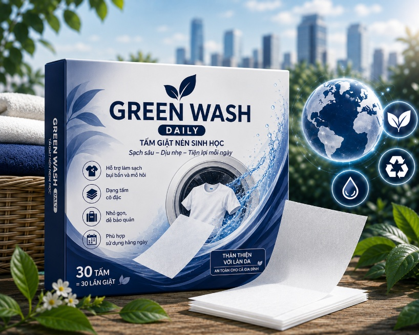
Green Wash Daily là dòng sản phẩm cơ bản phục vụ nhu cầu giặt quần áo hằng ngày. Sản phẩm hướng đến những người cần một giải pháp giặt đơn giản, tiện lợi nhưng vẫn đ…
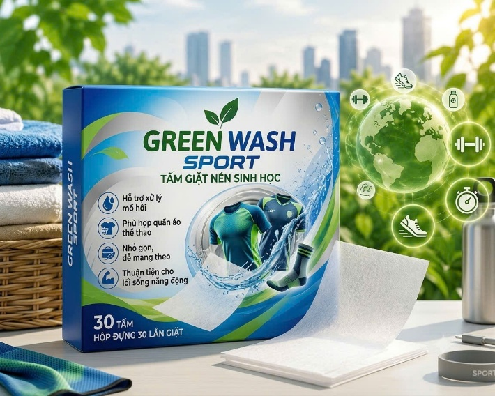
Green Wash Sport được thiết kế cho người thường xuyên vận động, tập gym, chạy bộ hoặc chơi thể thao. Sau quá trình vận động, quần áo thường chứa nhiều mồ hôi và cần …
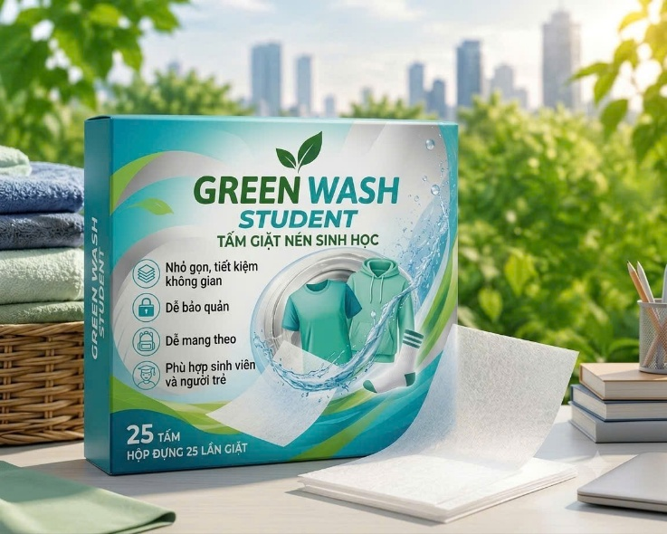
Green Wash Student là dòng sản phẩm dành cho sinh viên, đặc biệt là những người sống tại ký túc xá hoặc nhà trọ. Với thiết kế dạng tấm cô đặc, sản phẩm chiếm ít khôn…
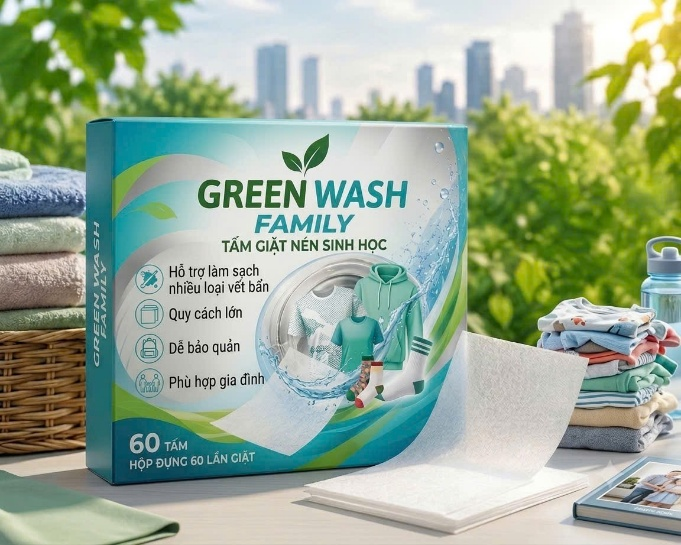
Green Wash Family hướng đến các gia đình hiện đại có nhu cầu giặt quần áo thường xuyên. Sản phẩm được thiết kế với quy cách lớn hơn để phù hợp với nhu cầu sử dụng củ…
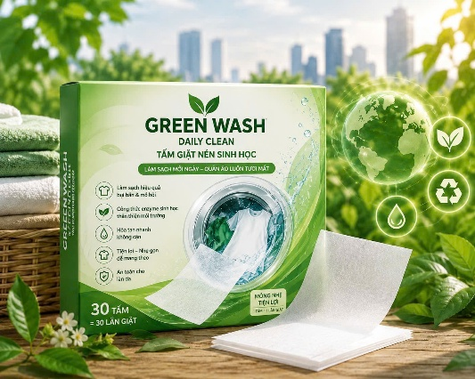
Green Wash Daily Clean là dòng sản phẩm tập trung vào nhu cầu làm sạch quần áo hằng ngày. Sản phẩm phù hợp với các loại quần áo thường xuyên tiếp xúc với bụi bẩn và …
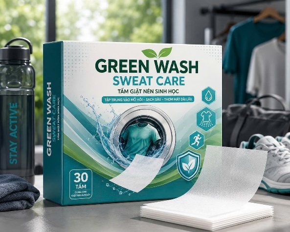
Green Wash Sweat Care tập trung vào nhóm quần áo có nhiều mồ hôi, đặc biệt phù hợp với người thường xuyên vận động hoặc hoạt động ngoài trời. Sản phẩm được định hướn…
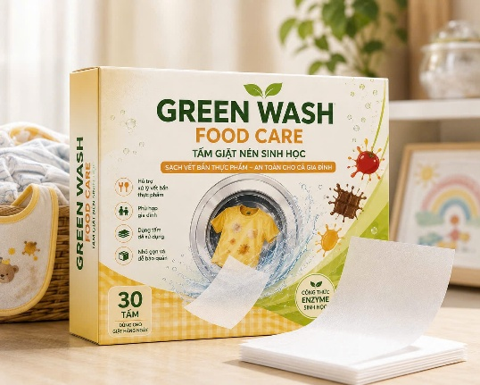
Green Wash Food Care được phát triển dành cho nhu cầu xử lý các vết bẩn từ thực phẩm trên quần áo. Đây là những vết bẩn thường gặp trong sinh hoạt hằng ngày, đặc biệ…
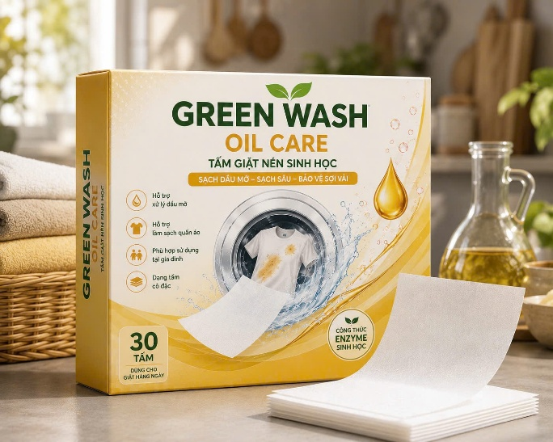
Green Wash Oil Care tập trung vào các vết dầu mỡ thường xuất hiện trên quần áo trong quá trình ăn uống và sinh hoạt. Đây là một trong những nhóm vết bẩn mà GreenCres…
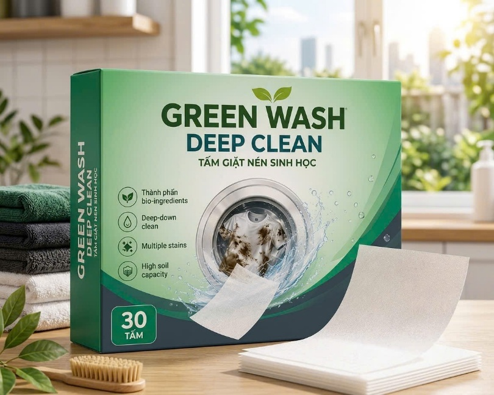
Green Wash Deep Clean dành cho những trường hợp quần áo có mức độ bẩn cao và cần được làm sạch kỹ hơn. Sản phẩm phát triển dựa trên định hướng enzyme sinh học của Gr…
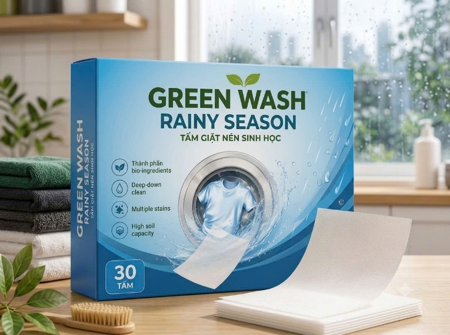
Green Wash Rainy Season được phát triển dựa trên đặc điểm khí hậu nhiệt đới gió mùa của Việt Nam, đặc biệt trong thời điểm mùa mưa kéo dài. Độ ẩm cao khiến quần áo d…
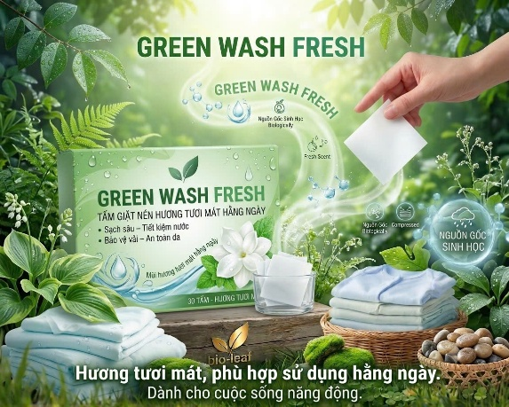
Green Wash Fresh là phiên bản hướng đến cảm giác tươi mát sau mỗi lần giặt. Sản phẩm phù hợp với người thích quần áo có cảm giác sạch sẽ, dễ chịu và sử dụng trong cá…
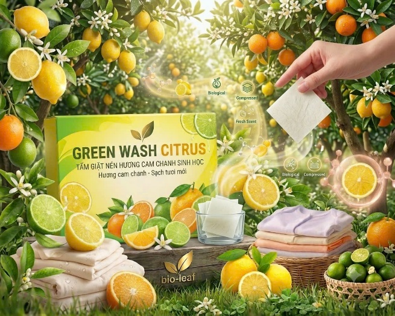
Green Wash Citrus là phiên bản lấy cảm hứng từ hương cam chanh, hướng đến cảm giác tươi mới và sảng khoái sau khi giặt. Sản phẩm phù hợp với người trẻ và những người…
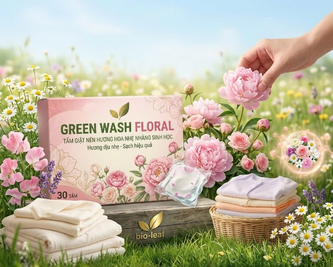
Green Wash Floral là phiên bản hướng đến người tiêu dùng yêu thích mùi hương hoa nhẹ nhàng. Sản phẩm kết hợp tính tiện lợi của tấm giặt với định hướng tạo cảm giác d…
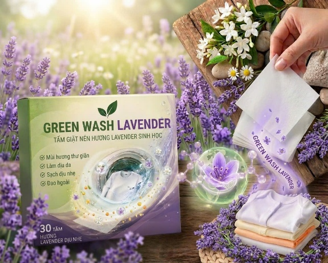
Green Wash Lavender là phiên bản mang định hướng hương lavender dịu nhẹ, phù hợp với người yêu thích những mùi hương nhẹ nhàng trên quần áo. Sản phẩm vẫn giữ những ư…
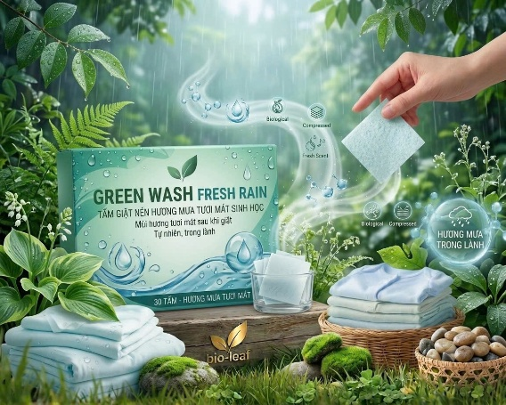
Green Wash Fresh Rain lấy cảm hứng từ cảm giác sạch sẽ và tươi mát sau cơn mưa. Sản phẩm hướng đến người tiêu dùng yêu thích cảm giác quần áo sạch, nhẹ nhàng và dễ c…
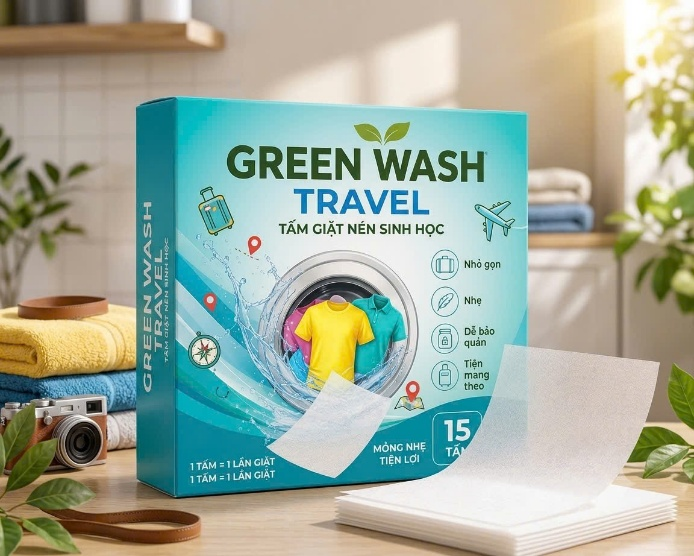
Green Wash Travel được thiết kế dành cho những người thường xuyên đi du lịch. Dạng tấm cô đặc giúp sản phẩm nhẹ và chiếm ít diện tích trong hành lý hơn so với các sả…
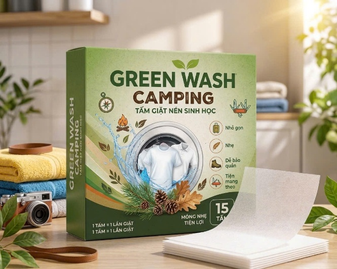
Green Wash Camping hướng đến những người thường xuyên tham gia dã ngoại, cắm trại hoặc hoạt động ngoài trời. Với thiết kế nhỏ gọn, sản phẩm không chiếm nhiều diện tí…
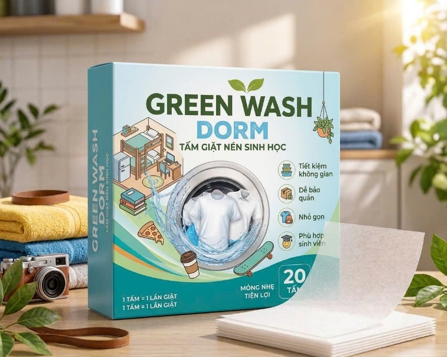
Green Wash Dorm được thiết kế dành cho sinh viên sống tại ký túc xá hoặc nhà trọ, nơi không gian lưu trữ thường hạn chế. Dạng tấm giúp người dùng tiết kiệm diện tích…
Green Wash Office hướng đến người đi làm có nhu cầu giặt quần áo công sở thường xuyên. Sản phẩm tập trung vào những vết bẩn và mồ hôi phát sinh trong quá trình di ch…
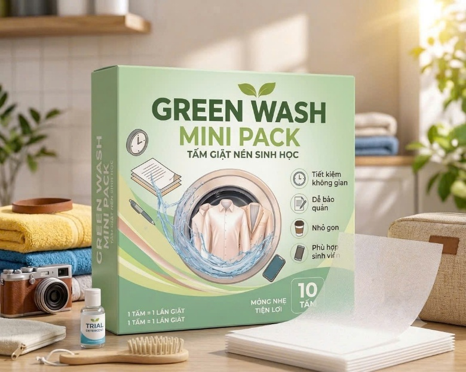
Green Wash Mini Pack là quy cách nhỏ dành cho khách hàng muốn trải nghiệm sản phẩm hoặc cần một lượng nhỏ để mang theo khi đi du lịch, công tác và dã ngoại. Sản phẩm…
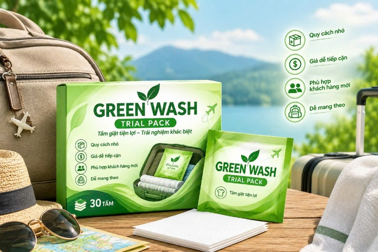
Green Wash Trial Pack là gói dùng thử dành cho khách hàng chưa từng sử dụng tấm giặt. Quy cách nhỏ giúp người tiêu dùng có thể trải nghiệm sự khác biệt giữa tấm giặt…
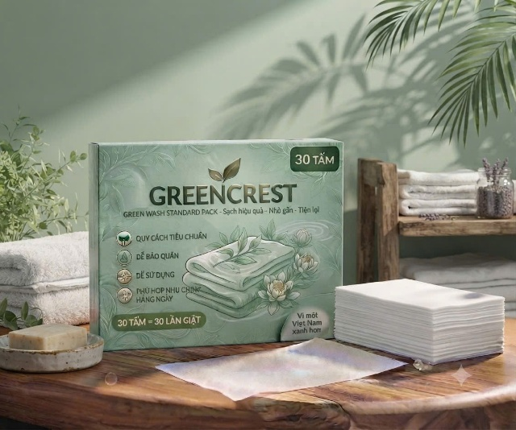
Green Wash Standard Pack là quy cách tiêu chuẩn dành cho khách hàng đã quen với sản phẩm và có nhu cầu sử dụng thường xuyên. Đây có thể được xem là dòng sản phẩm chủ…
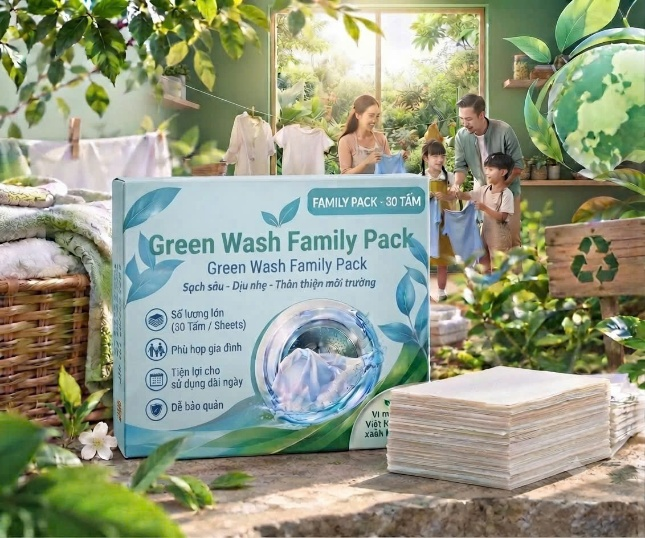
Green Wash Family Pack là quy cách lớn dành cho các gia đình có nhu cầu giặt giũ thường xuyên. Sản phẩm cung cấp số lượng tấm giặt nhiều hơn, giúp hạn chế việc phải …
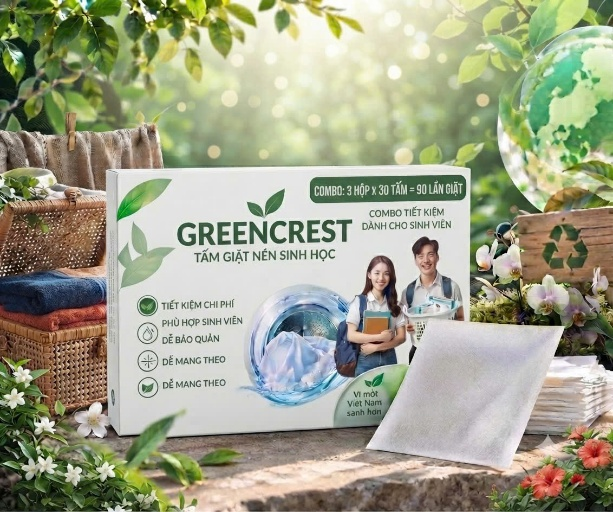
Green Wash Student Combo là combo được thiết kế riêng cho sinh viên, kết hợp nhiều tấm giặt với mức giá tiết kiệm hơn so với mua từng gói riêng lẻ. Combo giúp sinh v…
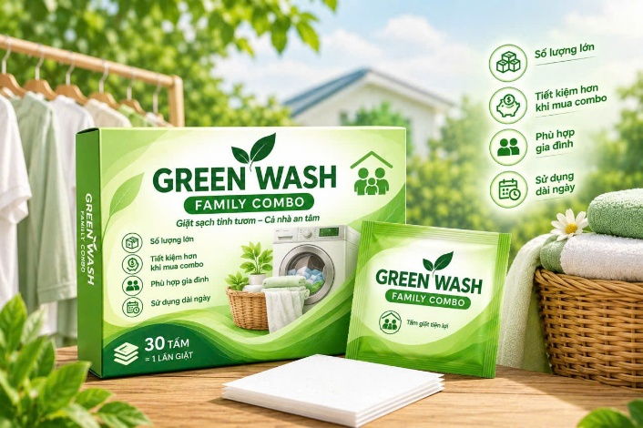
Green Wash Family Combo là combo dành cho gia đình có nhu cầu sử dụng Green Wash thường xuyên. Việc kết hợp nhiều tấm giặt trong một combo giúp gia đình có lượng sản…
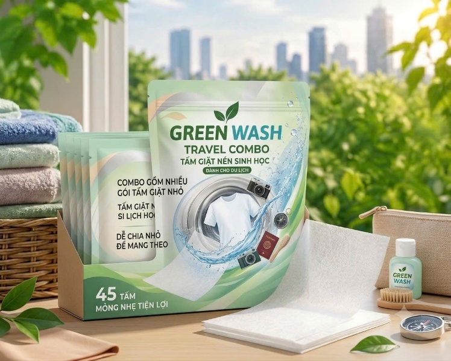
Green Wash Travel Combo là combo gồm nhiều gói tấm giặt nhỏ dành cho người thường xuyên du lịch, công tác hoặc dã ngoại. Các gói có thể được chia ra để sử dụng trong…
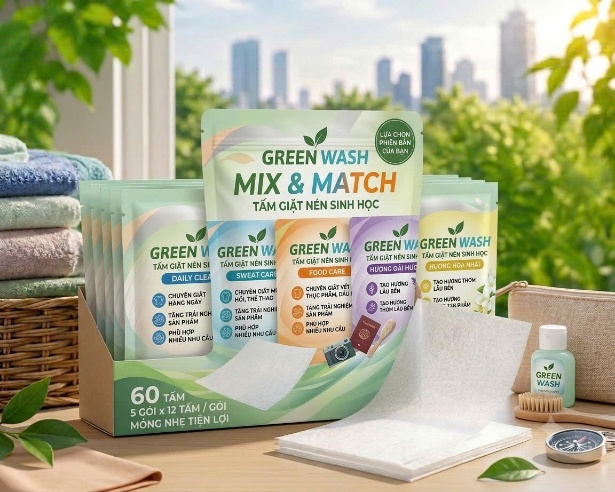
Green Wash Mix & Match cho phép khách hàng kết hợp nhiều phiên bản Green Wash khác nhau trong cùng một combo. Khách hàng có thể lựa chọn các dòng phù hợp với nhu cầu…
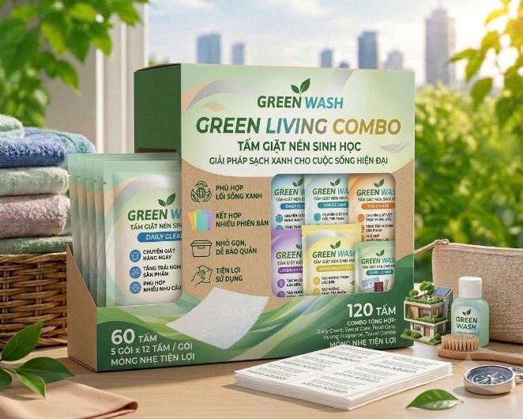
Green Wash Green Living Combo là combo tổng hợp dành cho người tiêu dùng quan tâm đến lối sống xanh và muốn sử dụng nhiều dòng sản phẩm Green Wash. Combo kết hợp các…
Phát triển các giải pháp phục vụ nhu cầu giặt giũ.
Tìm kiếm những cách tiếp cận tiện lợi hơn cho người tiêu dùng.
Lối sống xanh trở thành một định hướng phát triển quan trọng.
Giới thiệu định hướng tấm giặt xanh, nhỏ gọn và tiện lợi.
Hướng đến những lựa chọn có ý thức hơn đối với môi trường.
Đơn giản hóa trải nghiệm giặt giũ trong cuộc sống hiện đại.
Tập trung vào khả năng đáp ứng nhu cầu làm sạch của người tiêu dùng.
Mang đến những giải pháp giặt giũ tiện lợi, hiệu quả và hướng đến lối sống xanh cho người tiêu dùng hiện đại.
Trở thành thương hiệu được người tiêu dùng Việt Nam lựa chọn khi tìm kiếm giải pháp giặt giũ hiện đại, tiện lợi và có trách nhiệm với môi trường.
Tài liệu Word có mô tả đăng nhập, giỏ hàng, thanh toán, theo dõi đơn, tìm kiếm và yêu thích. Bản này triển khai các thao tác đó ở mức demo bằng JavaScript, chạy ngay khi mở index.html.
Các mục dưới đây được dựng từ phần FAQ trong tài liệu Word.
Green Wash là giải pháp giặt giũ được phát triển dưới dạng tấm giặt cô đặc, hướng đến sự tiện lợi trong quá trình sử dụng và bảo quản.
Chọn sản phẩm, thêm vào giỏ hàng và tiến hành thanh toán. Bản web này mô phỏng luồng đó ngay trên trang.
Có. Theo mô tả trong tài liệu, khách hàng có thể nhập mã đơn hàng để theo dõi trạng thái.
Tài liệu có đề xuất trang chính sách đổi trả gồm điều kiện, trường hợp hỗ trợ, thời gian yêu cầu, quy trình và trường hợp không áp dụng.
Tài liệu đề xuất hỗ trợ qua email, hotline, địa chỉ và form liên hệ. Các thông tin cụ thể chưa được cung cấp nên bản demo không tự điền dữ liệu giả.
Form minh họa theo nội dung trong tài liệu; không gửi dữ liệu ra ngoài.